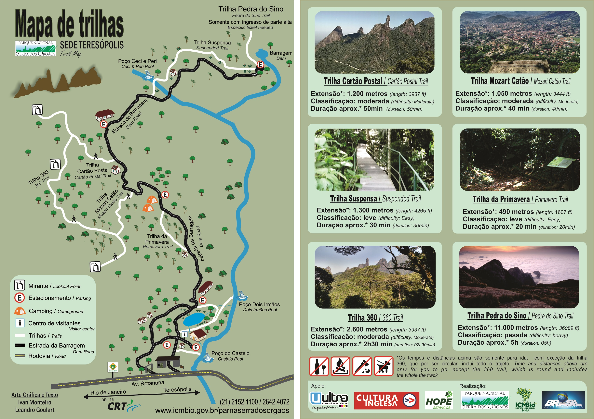

Sobre
O Parque Nacional da Serra dos Órgãos é uma Unidade de Conservação Federal de Proteção Integral, subordinada ao
Instituto Chico Mendes de Conservação da Biodiversidade (ICMBio), cujo objetivo maior é o de preservar amostras
representativas dos ecossistemas nacionais.
O ICMBio é uma autarquia do Ministério do Meio Ambiente criada em 2007 para gerenciar as unidades de conservação
federais e projetos de conservação da biodiversidade, como o TAMAR e o Projeto Peixe Boi, assumindo atribuições
antes vinculadas ao IBAMA
Criado em 30 de novembro de 1939, o PARNASO é o terceiro parque mais antigo do país, representando um importante
marco na história das Unidades de Conservação Brasileiras.
Atrativos
- Centro de visitantes
- Piscina de águas naturais
- Área de lazer
- Bosques Santa Helena e da Colina
Atrativos Principais:
Centro de visitantes:
Entre as atrações estão a maquete com animação e áudio explicando as características do Parque e destacando os principais pontos, reproduções de animais e computadores com apresentação multimídia e jogos temáticos. Na sala interativa é possível ouvir os cantos de aves e vocalizações de mamíferos ou aprimorar a capacidade de ver os animais na floresta. O Centro de Visitantes conta, ainda, com cafeteria e loja de lembranças, com camisetas bordadas, livros, suprimentos para passeios no Parque e outras lembranças.
Piscina de águas naturais:
A Piscina de águas naturais é uma das mais tradicionais atrações do PARNASO. Muito procurada no verão, ela compõe um belo cenário para piqueniques e atividades recreativas no frio inverno da serra.
Área de lazer
A área de lazer para os visitantes na parte baixa da Sede Teresópolis é toda sinalizada e possui estacionamento. A 100 metros da portaria o rio Paquequer proporciona um gostoso banho de cachoeira, um pouco acima está a piscina de pedra.
Bosques Santa Helena e da Colina
A trilha do Caxinguelê, cortada pelo Rio Paquequer, é um passeio leve e agradável, onde o visitante entra em contato com a natureza. Quem passa o dia no Parque não pode deixar de conhecer os bosques Santa Helena e da Colina, projetados pelo arquiteto e paisagista Ângelo Murgel, com refúgios, muita sombra, mesas e bancos de pedra para piquenique e banheiros.
Trilhas
Estrada da Barragem
- Nível de dificuldade: leve
- Extensão: 3.000m
- Duração: 2 horas (ida e volta)
Estrada calçada em paralelepípedo com trânsito liberado para automóveis. É a via que dá acesso a todas as trilhas da Sede Teresópolis.
Ideal para caminhadas de lazer, tem extensão de 3 Km e placas indicativas de distância em intervalos de 500m. A estrada conta com vários mirantes, recantos para descanso, duchas e cascatas.
A estrada termina na Praça da Barragem, ponto de captação de água para a cidade de Teresópolis.
Trilha Suspensa
- Nível de dificuldade: leve
- Extensão: 1300m
- Duração: 1 hora
Uma das grandes atrações do PARNASO, a trilha suspensa começa na Praça da Barragem. A trilha possui piso de madeira e corrimão, permitindo acesso até a cadeirantes.
Construída sobre um aqueduto do início do século XX, esta trilha corta um trecho de Mata Atlântica em nível elevado em relação ao terreno, permitindo ao visitante uma observação mais próxima da copa das árvores.
A trilha é circular, retornando para a Estrada da Barragem por escadarias. No trecho final a trilha atinge grandes alturas em relação ao solo (até 8 metros) e permite belas visões da floresta e dos paredões do PARNASO.
Uma escada dá acesso a poços do rio Paquequer, ótima opção de banho em dias quentes.
* Iniciando pela Praça da Barragem é possível caminhar até a escada que desce à esquerda
voltando para a Estrada da Barragem (mirante do Beija Flor).
Outro trecho que está liberado é na entrada próxima a ponte sobre o Rio Paquequer até
uma
escada que desce para a cachoeira Ceci-Peri.
Trilha Primavera
- Nível de dificuldade: leve
- Extensão: cerca de 500m
- Duração: 15 minutos
A trilha tem 15 minutos de caminhada leve, para todas as idades. O visitante experimenta a sensação de estar em uma mata preservada, sendo possível observar inúmeras espécies. Entre elas destaca-se o palmito-juçara (Euterpe edulis), espécie ameaçada de extinção pelo corte indiscriminado.
Trilha Mozart Catão
- Nível de dificuldade: leve a moderado
- Extensão: 800m
- Duração: 1:30 (ida e volta)
Esta trilha cruza pequenos cursos d'água e floresta de encosta até chegar ao Mirante Alexandre Oliveira (foto acima), com vista para a cidade de Teresópolis e o Parque Estadual dos Três Picos, ao fundo. Os nomes da trilha e do mirante homenageiam dois alpinistas da cidade, mortos ao tentar escalar a face sul do Aconcágua, em 1998.
Trilha Cartão Postal
- Nível de dificuldade: moderado
- Extensão: 1.200m
- Duração: 2 horas (ida e volta)
Esta bela trilha, com acesso pela Estrada da Barragem próximo à pousada, cruza área de floresta com belas vistas da montanha e dá acesso a um mirante voltado para a cadeia de montanhas da Serra dos Órgãos, proporcionando ao visitante um novo ângulo de observação do Dedo de Deus do meio da floresta. No caminho é possível observar algumas grandes árvores, como o jequitibá.
Trilha da Pedra do Sino
- Nível de dificuldade: moderado a pesado
- Extensão: cerca de 11 Km
A Pedra do Sino é o ponto culminante da Serra dos Órgãos com 2.275m e lá do alto a vista alcança toda a Baía de Guanabara, a cidade do Rio de Janeiro e parte do Vale do Paraíba, no lado continental. O acesso feito por trilha é um clássico do montanhismo. São cerca de 11 km (cinco a seis horas) de caminhada desde a sede do Parque, em Teresópolis, a 1.100 metros de altitude, até o ponto culminante da serra. O primeiro trecho é mais leve, por dentro da mata, com calçamento da época do Império. As duas cachoeiras no caminho são boas opções de parada. A trilha é acidentada e seu acesso é limitado a 100 pessoas por dia. A trilha é também o trecho final da tradicional travessia Petrópolis-Teresópolis.
Mapa de Trilhas
Endereço :
Av. Rotariana , Teresópolis-RJ
S/n. - Cep. 25960-602
Teresópolis-RJ
Como chegar:
A entrada principal do Parque Nacional da Serra dos Órgãos fica na área urbana de Teresópolis, na Avenida Rotariana s/nº (que interliga a BR 116 Rio-Bahia, na altura do km 89,5 à cidade), com acesso bem sinalizado. A entrada do parque fica ao lado da ponte sobre o Rio Paquequer, na entrada da cidade, próximo ao Mirante do Soberbo e ao Portal da Cidade.
Na BR 116, sentido Rio-Teresópolis, na altura de Magé, existe a praça do pedágio administrado pela CRT, com cobrança bidirecional. Há cobrança de pedágio também no sentido Teresópolis-Magé-Teresópolis.
Telefones :
Adiminstração : (21) 2152-1100
Bilheteria : (21) 2642-0579